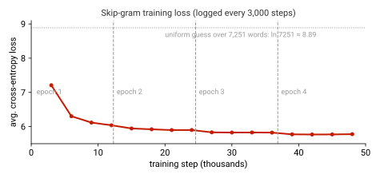
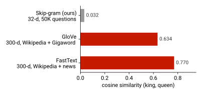

1Overview
Lecture 2 introduced the idea that a word can be represented by a dense vector learned from the contexts it appears in.
This tutorial turns that idea into working code. Notebook 1 gives you the PyTorch skills you will use all semester:
tensors, automatic differentiation, optimizers, nn.Module and data loaders. Notebook 2 uses those skills to
train a Skip-gram Word2Vec model on 50,000 Quora questions and to compare it with pre-trained GloVe and FastText vectors.
Learning objectives
- Write the forward pass of a 4-layer feed-forward network with raw tensors, and explain what
loss.backward()computes. - Verify that
optimizer.step()performs exactly the update \(W \leftarrow W - \eta\,\nabla_W J\), and whyoptimizer.zero_grad()is needed. - Re-implement the same network as an
nn.Moduleand feed it data withDataset/DataLoader. - Turn raw text into Skip-gram training pairs (tokenize, build a vocabulary, slide a context window).
- Train a Skip-gram model, read off its word vectors, and query nearest neighbours by cosine similarity.
- Explain how GloVe and FastText differ from Word2Vec, and estimate their memory and compute cost.
Time plan
| Part | What you do | Time (approx.) |
|---|---|---|
| Setup | Open Colab, switch to a GPU runtime, run the install cell | 10 min |
| Notebook 1 | Raw-tensor network → autograd → nn.Module → data pipelines | 45 min |
| Notebook 2 | Data preparation → Skip-gram training (≈ 2 min on a T4 GPU) → GloVe/FastText → comparison | 60 min |
| Wrap-up | Exercises and the self-check quiz | 20–30 min |
Downloads add time: CIFAR-10 (170 MB) in Notebook 1, and the pre-trained GloVe (376 MB) and FastText (958 MB) vectors in Notebook 2.
2Before you start
Option A · Google Colab (recommended)
- Click Open in Colab for a notebook, then File → Save a copy in Drive so your edits are kept.
- Runtime → Change runtime type → T4 GPU. Notebook 2 calls
model.cuda()and needs a GPU. - Run cells top to bottom with Shift+Enter. The first cell of Notebook 2 installs packages and downloads the Quora data.
Option B · Run locally
conda create -n nlp26 python=3.11 -y
conda activate nlp26
pip install torch torchvision numpy pandas matplotlib \
scikit-learn tqdm gensim "nltk>=3.9.2,<4" "bokeh>=3.8,<3.10" jupyterlab
jupyter labNo NVIDIA GPU? Replace .cuda() with .to(device), where
device = "cuda" if torch.cuda.is_available() else "cpu". Training on a CPU takes several times longer.
What you need to know already
- Python basics (functions, classes, list comprehensions) and NumPy arrays.
- Matrix–vector products and the chain rule from calculus.
- Lecture 2: distributional semantics, one-hot vs. dense vectors, cosine similarity.
3Notebook 1 · From raw tensors to nn.Module
Notebook 1 at a glance
torchtorchvisionnumpy75 cellsGPU optional
You build a small regression network by hand — every weight is a tensor you create — and let PyTorch's autograd compute the gradients. Then you rebuild the same network the idiomatic way and learn how PyTorch feeds data to a model.
3.1 The network and its forward pass
The network maps a 3-dimensional input to one output through three hidden layers of 5 units, with a sigmoid after every layer
(\(D = 3\), \(K = 5\)). Its 86 parameters are created by hand with
requires_grad=True, which tells PyTorch to track every operation on them.
D, K = 3, 5 W1 = torch.randn((K, D), requires_grad=True) # parameters you create yourself b1 = torch.randn((K, 1), requires_grad=True) # ... W2, b2, W3, b3 (5x5), W4 (1x5), b4 def sigmoid(x): return 1 / (1 + torch.exp(-x)) x = torch.randn((D, 1)) # one input y_ground = torch.randn((1,)) # its target a1 = sigmoid(torch.matmul(W1, x) + b1) a2 = sigmoid(torch.matmul(W2, a1) + b2) a3 = sigmoid(torch.matmul(W3, a2) + b3) y_pred = sigmoid(torch.matmul(W4, a3) + b4) J = (y_pred - y_ground) ** 2 # squared error
3.2 Backward pass: who is responsible for the loss?
J.backward() walks the recorded computation graph backwards and applies the chain rule, storing
\(\partial J/\partial \theta\) in .grad for every tracked parameter. For the last layer, for example:
and the same pattern repeats layer by layer. The notebook shows this live:
Gradients do not exist until a backward pass creates them — that is why the first print shows None.
3.3 Updating the parameters
Gradient descent moves every parameter a small step against its gradient,
\(\theta \leftarrow \theta - \eta\,\nabla_\theta J\) with learning rate \(\eta = 0.1\).
The notebook first computes the new \(W_2\) by hand, then lets torch.optim.SGD do it, and checks that both agree:
lr = 0.1 expected_new_W2 = W2 - lr * W2.grad # the update, by hand optimizer = torch.optim.SGD([W1, b1, W2, b2, W3, b3, W4, b4], lr=lr) optimizer.step() # the same update, by PyTorch torch.eq(W2, expected_new_W2).all() # -> tensor(True)
.grad. If you skip optimizer.zero_grad(), the next step uses the sum of
the old and new gradients. The notebook shows that after zero_grad() every .grad is back to None.
3.4 The same network, the PyTorch way
nn.Linear owns its weight and bias, nn.Module registers them automatically, and
network.parameters() hands them all to the optimizer. Compare the two versions:
W1 = torch.randn((K, D), requires_grad=True) b1 = torch.randn((K, 1), requires_grad=True) z1 = torch.matmul(W1, x) + b1 a1 = sigmoid(z1)
class neural_network(torch.nn.Module): def __init__(self, D, K): super().__init__() self.layer1 = torch.nn.Linear(D, K) self.layer2 = torch.nn.Linear(K, K) self.layer3 = torch.nn.Linear(K, K) self.layer4 = torch.nn.Linear(K, 1) def forward(self, x): a = torch.sigmoid(self.layer1(x)) a = torch.sigmoid(self.layer2(a)) a = torch.sigmoid(self.layer3(a)) return torch.sigmoid(self.layer4(a))
A full training step is now four lines, the pattern you will reuse in every assignment:
network = neural_network(D, K) optimizer = torch.optim.SGD(network.parameters(), lr=0.1) y_pred = network(x) # 1. forward J = (y_pred - y_ground) ** 2 # 2. loss J.backward() # 3. backward optimizer.step() # 4. update optimizer.zero_grad() # and reset gradients for the next step
3.5 Feeding data: NumPy, Dataset and DataLoader
torch.from_numpy and .numpy() convert between NumPy and PyTorch without copying memory. For real datasets,
a Dataset says how to get one example and a DataLoader turns it into shuffled mini-batches:
class CustomDataset(torch.utils.data.Dataset): def __init__(self): self.inputs = torch.randn(100, 3) # 100 samples, 3 features self.labels = torch.randint(0, 2, (100,)) # binary labels def __getitem__(self, index): # one example return self.inputs[index], self.labels[index] def __len__(self): # dataset size return len(self.inputs) train_loader = torch.utils.data.DataLoader(CustomDataset(), batch_size=64, shuffle=True) inputs, labels = next(iter(train_loader))
The notebook also loads CIFAR-10 through torchvision.datasets: each image is a [3, 32, 32] tensor, and a loader with
batch_size=64 yields batches of shape [64, 3, 32, 32].
4Notebook 2 · Word embeddings: Word2Vec, GloVe and FastText
Notebook 2 at a glance
torchgensimnltkscikit-learnbokeh53 cellsGPU required as written
Train Skip-gram Word2Vec from scratch on Quora questions, inspect what it learned, then compare it with pre-trained GloVe and FastText vectors on similarity, rare words and cost.
4.1 From raw text to training pairs
Words seen fewer than 5 times are mapped to <unk> (index 0); in the run this affects 36,778 of the 621,721 tokens (5.9%).
The window of size 2 then turns every position into a (center, context) example:
contexts[2] in the notebook.4.2 Skip-gram Word2Vec
Skip-gram predicts each context word from the center word. Every word has two vectors: an input vector \(u_w\) (a row of the embedding matrix \(U\)) and an output vector \(v_w\) (a column of the output layer \(V\)). The model turns their dot products into a distribution over the vocabulary:
nn.Embedding lookup followed by an nn.Linear layer, trained with cross-entropy against the true context word.class Skip_Gram_Model(nn.Module): def __init__(self, vocab_size, embedding_dim): super().__init__() self.embeddings = nn.Embedding(vocab_size, embedding_dim) # U self.out_layer = nn.Linear(embedding_dim, vocab_size) # V def forward(self, inputs): # inputs: center-word indices return self.out_layer(self.embeddings(inputs)) # logits over the vocabulary model = Skip_Gram_Model(len(word2index), 32).cuda() criterion = nn.CrossEntropyLoss() # softmax + negative log-likelihood optimizer = optim.Adam(model.parameters(), lr=0.001) for batch in make_skip_gram_batches_iter(contexts, window_size=2, num_skips=4, batch_size=128): tokens, labels = batch['tokens'].cuda(), batch['labels'].cuda() loss = criterion(model(tokens), labels) loss.backward(); optimizer.step(); optimizer.zero_grad()
4.3 Training and what the model learned
| Setting | Value | Setting | Value |
|---|---|---|---|
| Embedding size \(d\) | 32 | Optimizer | Adam, lr = 0.001 |
| Window size | 2 | Context words per center word (num_skips) | 4 |
| Batch size | 128 pairs | Epochs | 4 (12,289 batches each) |

The word vectors are the rows of model.embeddings.weight. Nearest neighbours by cosine similarity,
\(\cos(u_a, u_b) = \frac{u_a^{\top}u_b}{\lVert u_a\rVert\,\lVert u_b\rVert}\), already show structure:
Most neighbours of my are other possessives (our, your, his, her): they appear in the same contexts, so they get similar vectors. The notebook then draws an interactive t-SNE map of the 100 most frequent words with Bokeh.
4.4 GloVe: learning from global co-occurrence counts
Instead of predicting one context at a time, GloVe first counts how often every pair of words co-occurs in the whole corpus, \(X_{ij}\), and then fits vectors whose dot products match the log counts:
The weight \(f\) (with \(x_{\max}=100,\ \alpha=3/4\) in the paper) stops very frequent pairs such as “of the” from dominating. The notebook loads pre-trained 300-d vectors trained on Wikipedia + Gigaword (6B tokens):
import gensim.downloader as api glove_model = api.load("glove-wiki-gigaword-300") # 376 MB, 400K words, 300-d glove_model.most_similar("king", topn=5) # nearest neighbours glove_model.similarity("king", "queen") # cosine similarity
4.5 FastText: words are bags of character n-grams
FastText represents a word by its own vector plus the vectors of its character n-grams (3 to 6 characters, with boundary markers
< and >):
Because teach, teacher and teaching share n-grams, rare and inflected words get good vectors, and a trained FastText model can even build vectors for words it never saw.
api.load("fasttext-wiki-news-subwords-300") returns word vectors only (a KeyedVectors table of 1M words), not the
n-gram model. A word missing from that table still raises a KeyError. To build vectors for unseen words, load the full
binary model with gensim.models.fasttext.load_facebook_model(...).
4.6 Comparing the three methods

The gap is about data and scale, not about Skip-gram itself: our model saw 50K short questions in which king and queen are rare,
with 32-d vectors and 4 epochs. GloVe and FastText were trained on billions of tokens with 300-d vectors. Likewise, Skip-gram returns
None for serendipity because the word never made it into our 7,251-word vocabulary.

Memory and compute (example: \(|V| = 10^4,\ d = 300,\ T = 10^6\) tokens, window \(C = 5\), \(K = 5\) negatives, \(S = 10^5\) n-grams, \(N = 10^7\) co-occurring pairs; float32)
| Method | What is stored during training | Memory | Training cost | Strength |
|---|---|---|---|---|
| Word2Vec (Skip-gram, neg. sampling) | input + output vectors: \(2|V|d\) | ≈ 24 MB 12 MB kept after training |
\(O(T\,C\,(K{+}1)\,d)\) | simple, streaming, good semantics |
| GloVe | two vector sets + biases: \(2|V|d + 2|V|\), plus \(N\) nonzero counts | ≈ 64 MB counts dominate |
\(O(N\,d)\) per epoch | uses global statistics; stable |
| FastText | word + n-gram vectors: \((|V|+S)\,d\) (plus output vectors) | ≈ 132 MB | Word2Vec cost × n-grams per word | rare words, morphology, OOV |
Worked numbers: \(2\cdot10^4\cdot300\cdot4\,\text{B} = 24\,\text{MB}\); \((6.02\cdot10^6 + 10^7)\cdot 4\,\text{B} \approx 64\,\text{MB}\) (count values only; storing the \((i,j)\) indices adds more); \(1.1\cdot10^5\cdot300\cdot4\,\text{B} = 132\,\text{MB}\). Section 1.6 of the notebook counts only the input matrix for Word2Vec and leaves the co-occurrence entries out of its GloVe total, so its numbers are smaller.
5Pitfalls & troubleshooting
| Symptom | Cause and fix |
|---|---|
AssertionError: Torch not compiled with CUDA enabled or no CUDA GPUs are available |
Notebook 2 calls .cuda(). In Colab choose a GPU runtime; locally replace .cuda() with .to(device). |
quora.zip is not a valid ZIP file |
Google Drive sometimes returns an HTML page instead of the file. Download train.csv from the
Kaggle Quora Question Pairs page and upload it next to the notebook. |
| CIFAR-10 or GloVe/FastText downloads are very slow | They are 170 MB, 376 MB and 958 MB. Run them once and keep the Colab session alive. You can skip the CIFAR-10 cells: the
CustomDataset example teaches the same ideas without a download. |
| Colab runs out of RAM when loading FastText | Restart the runtime and load only one of the two pre-trained models at a time, or del glove_model before loading FastText. |
| Loss does not go down / gradients grow | Check that optimizer.zero_grad() is called every step and that the learning rate is not too large. |
KeyError for a word |
The word is not in that model's vocabulary. Use word in word2index or word in glove_model.key_to_index before looking it up. |
| t-SNE plot looks different every run | t-SNE is stochastic; pass random_state=42 to TSNE for a reproducible layout. |
6Exercises
Not graded — but they are the best preparation for Assignment 1.
W1.grad and W4.grad after one backward pass. Then replace the sigmoid with
torch.relu and compare. Why are the first-layer gradients so much smaller with sigmoid? (Hint: \(\sigma'(z)\le 1/4\).)x and target y_ground, run 200 steps of forward → loss → backward → step → zero_grad
on the nn.Module network, and plot the loss. What happens if you remove zero_grad()?glove_model.most_similar(positive=["woman", "king"], negative=["man"]). Try three analogies of your own
(capitals, verb tenses, comparatives). Which ones fail, and why?embedding_dim = 100. How do the neighbours of
my and the king–queen similarity change? Report training time as well.nn.Embedding for context vectors and the
negative-sampling loss from Section 4.2 (sample \(K=5\) noise words from the unigram distribution raised to 3/4).
Compare speed per epoch and the nearest neighbours with the full-softmax model..bin model, load it with load_facebook_model, and get vectors
for made-up words such as unhuggable or tokenizerize. Which real words are their nearest neighbours?7Self-check quiz
Click a question to reveal the answer.
1. Why does print(W2.grad) show None before J.backward()?
Gradients are created by the backward pass. Until backward() runs, PyTorch has recorded the operations but has not
computed any \(\partial J/\partial W_2\), so .grad is still empty.2. What goes wrong if you never call optimizer.zero_grad()?
backward() adds to .grad. Without resetting, each update uses the sum of all past gradients, so steps become too large
and point in a stale direction.3. Four linear layers without activations: how expressive is that network?
No more than a single linear layer: \(W_4W_3W_2W_1x + c = W'x + c\). Nonlinear activations are what make depth useful.4. In the notebook's Skip-gram model, which matrix are the word vectors?
The weight ofnn.Embedding (\(U\), shape \(|V| \times d\)). The output layer
\(V\) holds the “context” vectors and is usually discarded after training.5. The first logged loss is about 7.2. What would a model that guesses uniformly score, and what does that tell you?
\(\ln 7251 \approx 8.89\). Even early in training the model is already better than chance, and the final 5.77 corresponds to an effective choice among roughly \(e^{5.77}\approx 320\) words — context prediction is inherently uncertain.6. Why is Skip-gram's king–queen similarity only 0.03 while GloVe's is 0.63?
Training data and capacity, not the algorithm: 50K Quora questions where king/queen are rare, 32-d vectors, 4 epochs — versus billions of Wikipedia/news tokens and 300-d vectors for the pre-trained models.7. Can the FastText vectors loaded with api.load(...) produce a vector for an unseen word?
No. That download is a plain table of word vectors. Only the full FastText model (with n-gram vectors, loaded via
load_facebook_model) can compose a vector for a new word from its character n-grams.8. What is the cost of one training pair with a full softmax, and how does negative sampling change it?
Full softmax computes \(|V|\) dot products of size \(d\): \(O(|V|\,d)\). Negative sampling computes only \(K+1\) of them: \(O(K\,d)\), independent of vocabulary size.8Further reading
PyTorch
Word embeddings
- Mikolov et al. (2013). Efficient Estimation of Word Representations in Vector Space
- Mikolov et al. (2013). Distributed Representations of Words and Phrases (negative sampling)
- Pennington et al. (2014). GloVe: Global Vectors for Word Representation
- Bojanowski et al. (2017). Enriching Word Vectors with Subword Information
- gensim FastText documentation
Next steps: Lecture 2 slides · Course schedule (Assignment 1 is out).